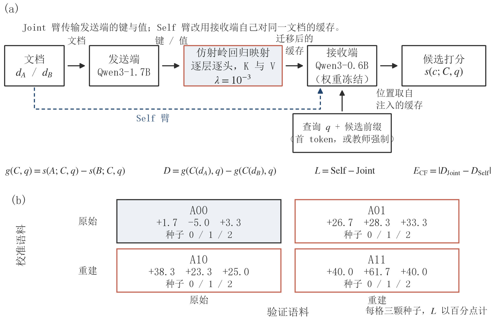
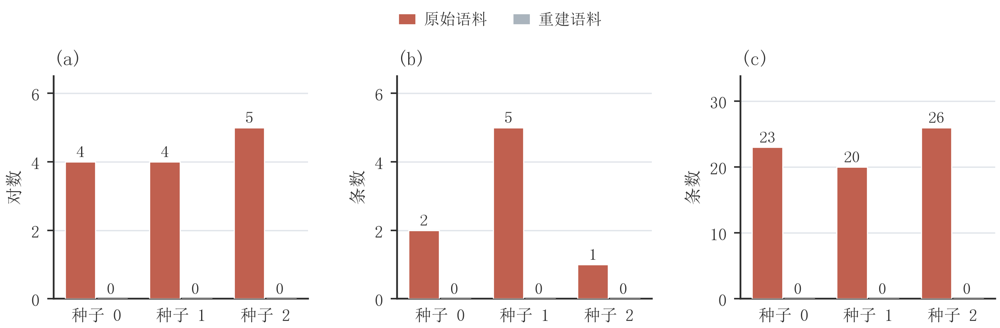

跨模型 KV 缓存迁移审计 — 中文图版
六张图与英文版的几何、数据完全一致，只把读者可见的文字换成中文（SimSun 宋体）。
每个数字都来自 results.json / evaluation.json，或由 data/audit_2x2/ 原始语料重算；
render_zh.py 在出图前对每张图跑同一套检查：文字重叠、图例压数据、箭头穿框、字号、灰度对比、缺字。
图 1 · 问题设定

缓存路径与语料版本设计。(a) 发送端逐层的键与值经逐层逐头的仿射岭回归映射后注入冻结的接收端，接收端只看查询与候选前缀；Self 臂改用接收端自己对同一文档的缓存。(b) 原始（0）与重建（1）的校准、验证语料交叉，每格三颗种子，格内为三种子的 L（百分点）。
数据：results.json → factorial[*].L
图 2 · 语料审计

重建消掉了什么。(a) F1–F4 中两个候选完全相同、却要求翻转的配对；(b) 校准与验证之间逐字相同的文档串；(c) 两套切分之间重复的查询串。三项在重建语料上均为零。
数据：data/audit_2x2/{legacy,fixed}/*_seed*.jsonl 重算
图 3 · 主结果
 反转。(a) 每单元每颗种子的 L 及其模板族区间，历史对角格 A00 加灰底，虚线为零差距。(b) 产生该差距的两个正确率水平，同一行内比较才成立。
反转。(a) 每单元每颗种子的 L 及其模板族区间，历史对角格 A00 加灰底，虚线为零差距。(b) 产生该差距的两个正确率水平，同一行内比较才成立。
数据：results.json → factorial[*].{L,self,joint}
图 4 · 打分口径
 换一种打分，方向还在吗。(a) 首 token、整串、长度归一三种口径下的 L。(b) 每种口径下的版本差 A11−A00 及其模板族区间。方向全部为正，幅度会动（种子 1 收窄 21.7 个百分点）。
换一种打分，方向还在吗。(a) 首 token、整串、长度归一三种口径下的 L。(b) 每种口径下的版本差 A11−A00 及其模板族区间。方向全部为正，幅度会动（种子 1 收窄 21.7 个百分点）。
数据：results.json → sequence、sequence_contrasts
图 5 · 反事实误差
 误差比对照小，正确率却大幅下降。(a) 首 token ECF 与错配、置零、随机三种对照。(b) 逐配对的 DSelf 与 DJoint，对角线附近为同号，内嵌每个种子的同号分子/分母。
误差比对照小，正确率却大幅下降。(a) 首 token ECF 与错配、置零、随机三种对照。(b) 逐配对的 DSelf 与 DJoint，对角线附近为同号，内嵌每个种子的同号分子/分母。
数据：results.json → factorial[A11_*]、evaluation.json
图 6 · 切片与映射器
 差距落在哪些切片。(a) 各切片上每单元每颗种子的 L；F1–F4 为语义切片，F5、F6 为对照切片，不参与方向一致性分析。(b) 重建验证集上仿射映射与蒸馏基线的对比，附模板族区间。
差距落在哪些切片。(a) 各切片上每单元每颗种子的 L；F1–F4 为语义切片，F5、F6 为对照切片，不参与方向一致性分析。(b) 重建验证集上仿射映射与蒸馏基线的对比，附模板族区间。
数据：evaluation.json → factorial、results.json → kd